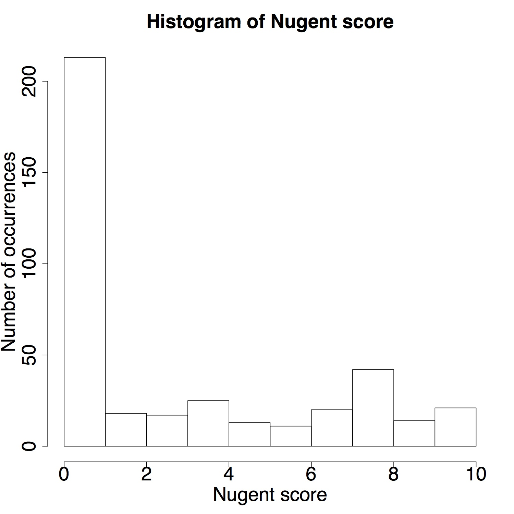

The histogram panel displays a histogram of the selected variable. Additional summary information for the variable is shown in the sidebar. The 'breaks' slider controls the approximate number of histogram bars.
Histograms give users a detailed view of the distribution of single variables in the dataset. This is often useful for dataset verification. For example, in the Ravel et al. dataset it may be helpful to determine how many samples have high Nugent scores and how many have low Nugent scores.
graphics::hist - generates histogram
base::summary - displays variable summary information